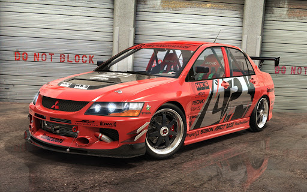
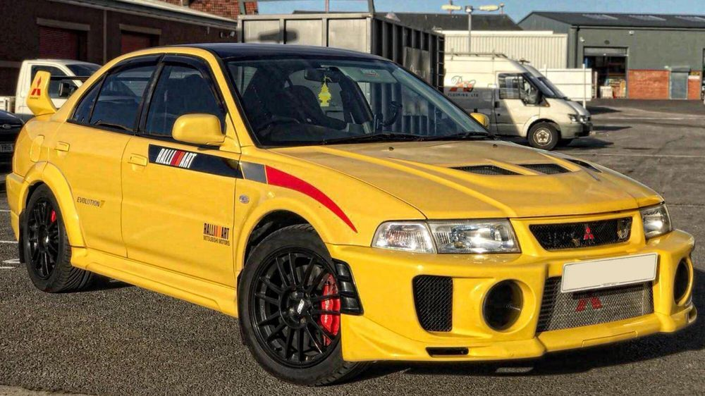
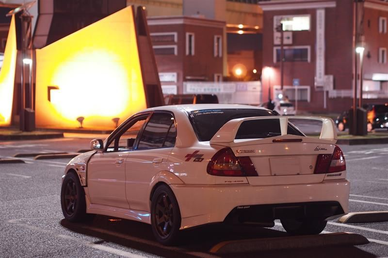

Mitsubishi Lancer Evo
 Mitsubishi Lancer Evolution, или Mitsubishi Lancer Evo — спортивный вариант Mitsubishi Lancer. Выполнен в кузове седан (IX поколение выпускалось так же с кузовом универсал). Внешне отличается от стандартного Lancer бампером, капотом, спойлером, расширенными крыльями. Имеет более мощный турбированный двигатель (до 10-го поколения ставился 4G63), более жесткий кузов, полный привод, механическую, автоматическую или роботизированную КПП с двумя сцеплениями. Автоматические коробки передач ставились на Evolution 7 GT-A и Evolution 9 универсал, роботизированная КПП ставится на Evolution 10. На данный момент существует 10 поколений Mitsubishi Lancer Evolution.  Lancer Evolution уникален среди своих соперников по Чемпионату мира по ралли, поскольку с сезона 1997 года вплоть до Ралли Сан-Ремо 2001 года он представлял собой омологированный автомобиль Группы A, слегка модифицированный для соперничества с автомобилями класса WRC. Он добивался успеха в ралли WRC в 1996—1999 годах благодаря финну Томми Мякинену, становившемуся Чемпионом мира среди пилотов в 1996—1999 годах, и его товарищу по команде Ричарду Бёрнсу, который помог в первый и пока единственный раз стать Чемпионом мира среди производителей в 1998 году. Несмотря на это, в конце 2001 года Evolution был заменен первым заводским автомобилем WRC, названным просто Lancer Evolution WRC, которым пилотировали заводские гонщики Мякинен, Фредди Лойкс, Алистер МакРэй и Франсуа Делекур, пока Mitsubishi не взял годичный отпуск в Чемпионате в конце 2002 года. Он был заменен на Ралли Монте-Карло 2004 года моделью Lancer WRC04. Mitsubishi покинул Чемпионат мира по ралли после сезона 2005 года с Lancer WRC05, пилотируемым в последующие годы частными гонщиками, включая бывшего заводского пилота итальянца Джиджи Галли и шведа Дэниела Карлссона. Тем не менее, Lancer Evolution до сих пор участвует в категории Группы N. На некоторых европейских рынках Evolution продавался под именем Mitsubishi Carisma Evolution, поэтому в конце 1990-х второй автомобиль заводской команды WRC, пилотируемый в основном Бёрнсом и позже Лойксом, выступал как Carisma GT. Малайзийский Proton Motors использовал автомобили Evolution III, Evolution V (наиболее известен как Proton 1784, с которым малайзийский гонщик Карамжит Сингх выиграл в 2002 году Чемпионат WRC среди серийных автомобилей) и Evolution VII как Proton Pert в различных раллийных сериях Азиато-Тихоокеанского Чемпионата по ралли. Mitsubishi с тремя автомобилями Evolution t выиграл в 1999 г. Чемпионат Австралии среди производителей. 